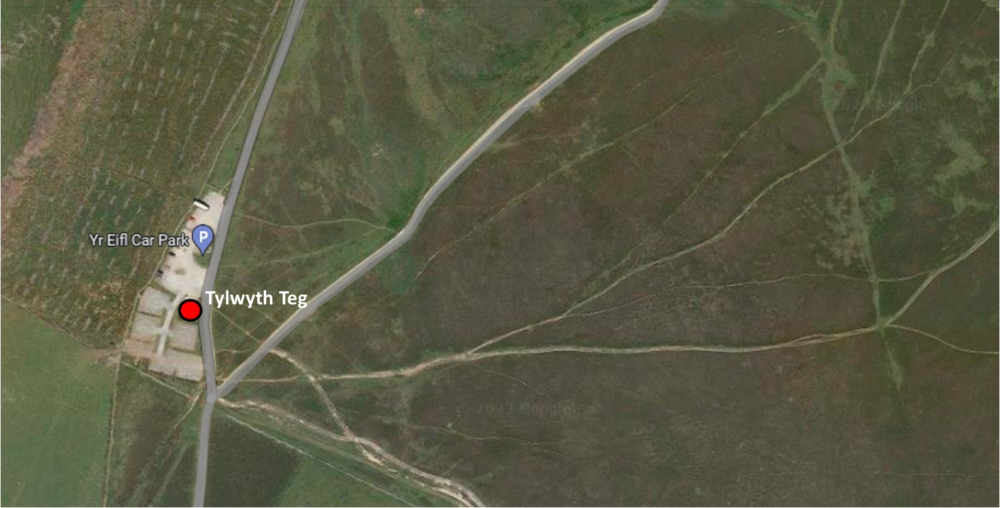

Les Fées
 Les rushes
Les rushes
Le nom "fée" désigne des êtres surnaturels qui figurent dans la mythologie et le folklore de nombreux pays, par exemple la banshee
Localisation des joncs
en Irlande, les brownies en Écosse, les fairies et les elves en Angleterre, et les tylwyth teg en Galles.
Il est possible que les contes de fées soient issus des traditions associées aux anciennes divinités celtes. Dans la plupart des contes populaires gallois, Gwyn ap Nudd est le roi des fées. Les fées sont souvent associées aux lacs. Le sorbier était considéré comme ayant des propriétés magiques qui protègent contre les fées, et on disait aussi que les fées n'aimaient pas le fer. Les thèmes et les motifs des contes sont très anciens et on en retrouve dans les récits folkloriques d'autres pays. Par exemple, les fées substituent leur propre progéniture aux enfants humains. Un autre motif est l'homme qui visite le pays des fées, et découvre, quand il revient chez lui, que de nombreuses années se sont écoulées et que personne ne le connaît plus. Quelques contes de la région sont issus de ces vieilles croyances. Jane Rowlands, qui habitait à Nant Gwrtheyrn, mettait un tisonnier à travers au-devant la cheminée pour renvoyer le diable et les fées car les fées avaient peur du fer.
Les habitants de la région étaient superstitieux et sensibles au surnaturel. Lorsqu'un événement dépassait l'entendement, il était le plus souvent attribué à l'ingérence des fées. Les fées parlaient une langue étrange et de temps en temps on l'entendrait quand on tombait sur elles à leur insu, mais dans leurs relations avec les gens du voisinage elles parlaient gallois. Un enfant qui était plus petit à la moyenne était considéré comme un enfant des fées. Elis Bach (Elis Le Petit), qui vivait à Nant Gwrtheyrn était obligé de
Tylwyth Teg
descendre la côte raide jusqu'au village à reculons, car ses jambes étaient si courtes. Elis était considéré comme un enfant substitué par les fées au véritable enfant de ses parents. Ellen Evans se souvient que sa tante racontait l'histoire d'une vieille dame qui était sage-femme dans le village. Un jour un monsieur est venu chez elle et lui a demandé de l'accompagner. Il voulait désespérément qu'elle parte, alors la dame l'accompagna à cheval. Selon l'histoire, elle s'est retrouvée dans un château où elle a assisté à un accouchement. Mais, après avoir ignoré un ordre, tout à coup elle s'est trouvée seule parmi la bruyère au Nant Gwrtheyrn. Le château, le bébé et le monsieur étaient disparus et elle n'avait aucun souvenir de ce qui lui était arrivé.